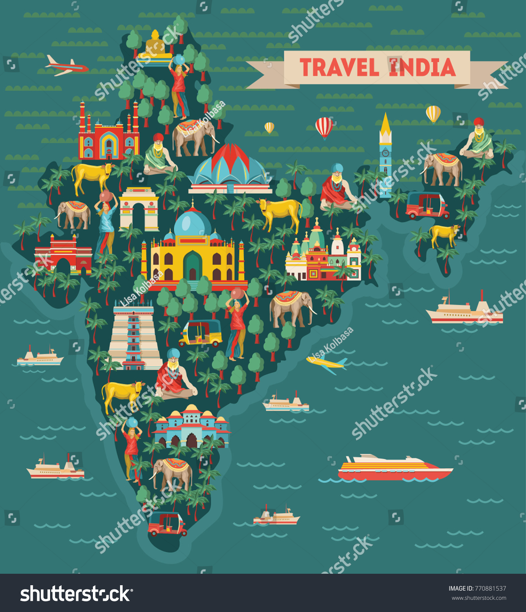

India has made a unique place on the world tourism map because of its rich natural and cultural diversity. In India, tourism is the third-largest industry in which about ten million people are employed directly or indirectly. Its visitor-friendly traditions, varied lifestyles, cultural heritage, colourful fairs and festivals are attractions for tourists. From ancient times, the rulers in different parts of India built luxurious palaces, wonderful temples, evergreen gardens, high forts and tombs. India is very rich in natural and cultural landscapes for tourism. The beautiful beaches, wildlife, national parks, sanctuaries, snow cover, rivers, mountain peaks, technological parks, and centres of pilgrimage are some of the tourist attractions in India. Heritage trains, yoga, meditation, Ayurveda, Siddha and natural health resorts also attract tourists in great numbers. The beauty of the cultural heritage and natural sites makes India a tourist paradise. We respect our guests and treat them as God. That is why we developed a cultural tradition where ‘Atithi Devo Bhava’ (Guest is God). India is the centre of spiritualism. The spiritual destinations are attracting a huge number of domestic and international tourists to India. Indian handicrafts, particularly jewellery, carpets, leather goods, and brass work, are the main shopping items for foreign tourists. Benefits of Tourism In the era of globalisation, travel and tourism activities have increased significantly. Promoting tourism not only creates jobs, drives exports, and generates prosperity across the world but also leads to several intangible benefits. It acts as a cultural adhesive that can be wielded as a powerful tool for global peace and integrity. It also helps people of far-flung areas to promote their culture and norms and provides the opportunity for a country to showcase various facets of its natural and cultural heritage across the world. Tourism also creates incentives for the conservation and preservation of the natural and cultural heritage of countries. They can help meet the cost of the conservation of archaeological and historic sites and prevent the deterioration or disappearance of these sites. Tourism activities are considered to be one of the major sources of economic growth. It can be regarded as a mechanism for generating employment as well as income in both formal and informal sectors. The speedy growth of tourism causes an increase in household incomes and government revenues. Central and State Governments are taking a number of initiatives to promote tourism in India.
travel and tourism industry has witnessed substantial growth in the recent period. It has immense potential for further expansion in the tourism sector on account of the vast natural and cultural heritage in India. There are several challenges in the tourism industry. Alleviation of these challenges will be essential for the industry to realise its full potential. The measures put in the tourism sector today will shape the tourism of tomorrow.